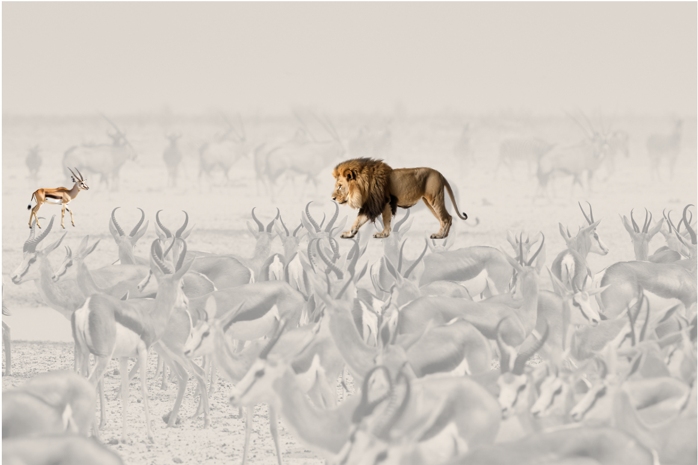
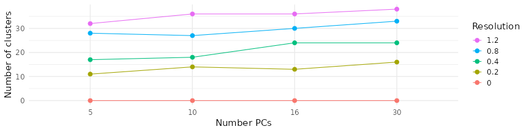
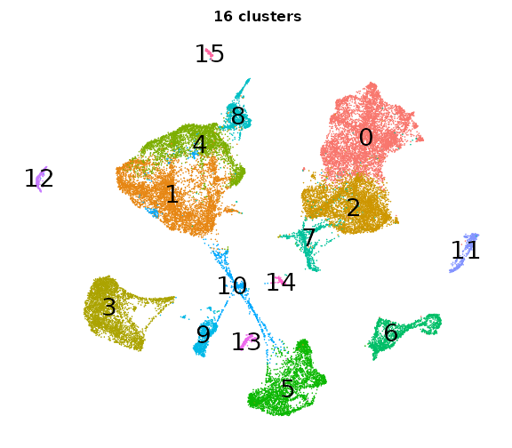
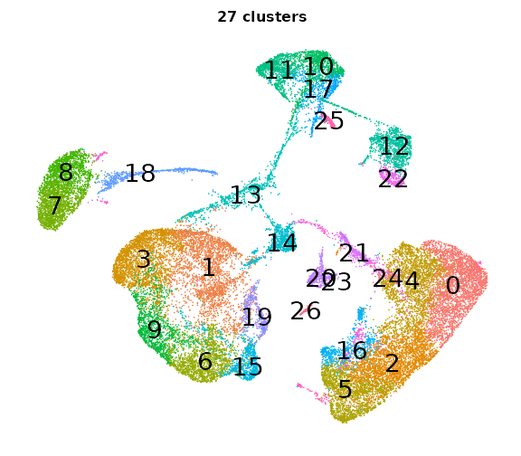

Clusters, PCs, and Resolutions: FAQ
UM Bioinformatics Core Workshop Team
2025-07-10
Why do we cluster on Principle Components (PC) instead of genes?
- Most genes show little variance at all; those that do often behave in concert (regulating up and down in a coherent experssion program). Because of this behavior, clustering directly on genes doesn’t work very well mathematically. (Because in 20k dimensions, the notion of distance breaks down; everything is too far from everything else.)
- PCs naturally diminish noise and aggregate signal in expression patterns across related genes; this makes patterns clearer.
- It’s much much faster to cluster 15 PCs than 20k genes.
How can such a small number of PCs faithfully represent so many genes? Aren’t we throwing away a ton of information?
- Selecting a few PCs helps by bringing the most important parts of the picture into focus. Remember that each PCs represents a gene expression pattern across many genes.
| Genes look like this | A Principle Component shows this |
|---|---|
 |
 |
- Recall from the earlier elbow plot that almost all the variance (signal) in the dataset is captured in the first handful of PCs. In our example dataset, the first 50 PCs capture over 99% of the cumulative variance.
So, what’s the correct resolution and number of PCs?
That depends on how many cell types/cell states do you expect. And the answer to that depends on:
- the tissue/bio-fluid of origin
- the quality of the sample / suspension
- your experimental design
- your research question
- the number of cells profiled
- the number of genes detected
- the range and specificity of cellular expression programs
For our sample data (bone biopsies from mice), we anticipate about 20 cell types.
Couldn’t the computer figure out the best PCs and resolution?
- The computer could try a bunch of PCs and resolutions to get the right number of clusters - and those clusters might look good numerically. But they wouldn’t be the best representation of the different cells types because the algorithm doesn’t understand the cell biology.
So how do we pick the right PCs and resolution?
- You will want to iterate through a few combinations of PCs and resolutions.
- It helps to know how PCs and resolution work together to influence the number of clusters.
- We applied the clustering and UMAP code blocks from earlier and tried a bunch of clusterings each with a different number of PCs and a different resolution.
| Different cluster counts across resolutions and PCs |
|---|
|  |
|
What do the cluster UMAPs look like at different PCs and resolutions?
- Each UMAP below was made with a different num of PCs and different resolution. (You can click on any UMAP to make it larger.)
- Each column is a different PC. Each row is a different resolution.
- The first row (in black and white) shows the UMAP projection without any clustering.
- Note that as PCs increase, the UMAPs go from “blobby” to”spindly”. (They gain local structure.)
- As the resolution increases, the UMAP projection is the same for a given PC, but that projection is cut up into more and more clusters.
| resolution | 5 | 10 | 16 | 30 |
|---|---|---|---|---|
| 0.0 |

|
|||
| 0.2 |  | |||
| 0.4 |

|
|||
| 0.8 |  | |||
| 1.2 |
{kind=link}
{kind=link}
{kind=link}
{kind=link}
{kind=link}
{kind=link}
{kind=link}
{kind=link}
{kind=link}
{kind=link}
{kind=link}
{kind=link}
{kind=link}
{kind=link}
{kind=link}
{kind=link}
{kind=link}
{kind=link}
But these are all still just … clusters - how do I know if they are biologically accurate?
We need two more tools to validate these are good biological clusters:
- We need to identify gene markers that behave differently across clusters.
- We need to annotate the clusters with prospective cell types.
We will cover both of topics in the next sections.